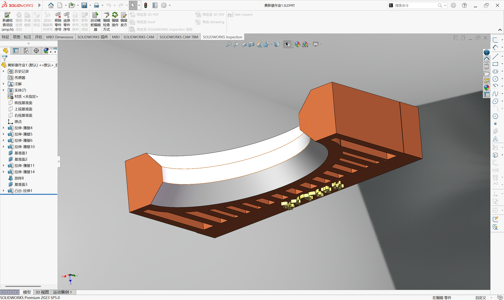

第一阶段：SolidWorks 3D 建模
在 3D 设计环节，我选择了西南交通大学标志性的大门作为原型，使用 SolidWorks 软件进行了三维建模。在建模过程中，我仔细调整了拱门的弧度以及顶部“西南交通大学”字样的细节，确保模型既还原真实比例，又符合 3D 打印的结构要求。


这里之后再写...
这里之后再写...
今天我创建了 Gitee 仓库，并提交了这个初始网页。
在 3D 设计环节，我选择了西南交通大学标志性的大门作为原型，使用 SolidWorks 软件进行了三维建模。在建模过程中，我仔细调整了拱门的弧度以及顶部“西南交通大学”字样的细节，确保模型既还原真实比例，又符合 3D 打印的结构要求。

建模完成后，我将其切片并导入 3D 打印机，最终使用浅蓝色的耗材成功打印出了实物。最激动人心的是，我带着自己亲手设计并打印的模型，来到了交大的真实大门前进行了一张“虚拟与现实”的合影，真正体验了一把从数字设计到物理制造的创客全过程！